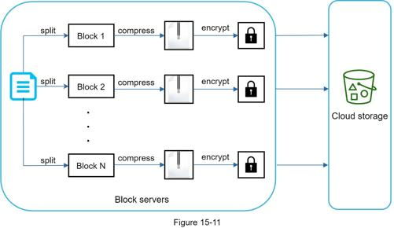
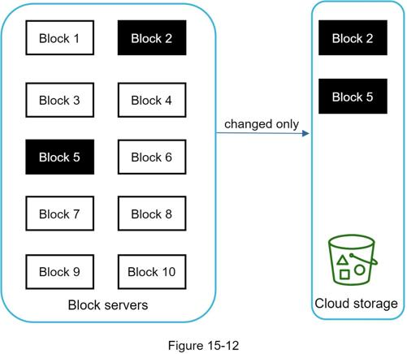
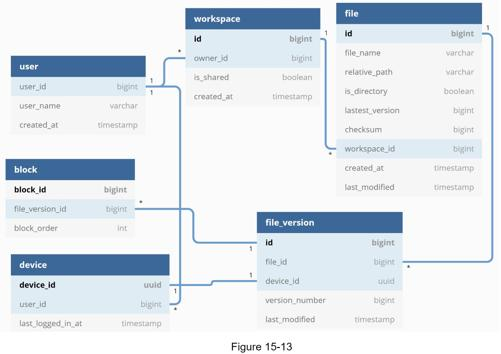
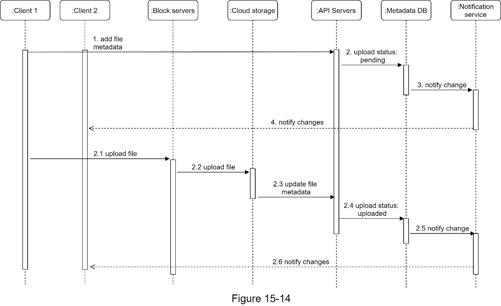
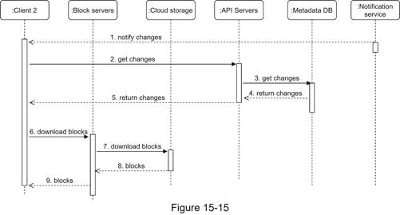

In this section, we will take a close look at the following: block servers, metadata database, upload flow, download flow, notification service, save storage space and failure handling.
For large files that are updated regularly, sending the whole file on each update consumes a lot of bandwidth. Two optimizations are proposed to minimize the amount of network traffic being transmitted:
•Delta sync. When a file is modified, only modified blocks are synced instead of the whole file using a sync algorithm [7] [8].
•Compression. Applying compression on blocks can significantly reduce the data size. Thus, blocks are compressed using compression algorithms depending on file types. For example, gzip and bzip2 are used to compress text files. Different compression algorithms are needed to compress images and videos.
In our system, block servers do the heavy lifting work for uploading files. Block servers process files passed from clients by splitting a file into blocks, compressing each block, and encrypting them. Instead of uploading the whole file to the storage system, only modified blocks are transferred.
Figure 15-11 shows how a block server works when a new file is added.

•A file is split into smaller blocks.
•Each block is compressed using compression algorithms.
•To ensure security, each block is encrypted before it is sent to cloud storage.
•Blocks are uploaded to the cloud storage.
Figure 15-12 illustrates delta sync, meaning only modified blocks are transferred to cloud storage. Highlighted blocks “block 2” and “block 5” represent changed blocks. Using delta sync, only those two blocks are uploaded to the cloud storage.

Block servers allow us to save network traffic by providing delta sync and compression.
Our system requires strong consistency by default. It is unacceptable for a file to be shown differently by different clients at the same time. The system needs to provide strong consistency for metadata cache and database layers.
Memory caches adopt an eventual consistency model by default, which means different replicas might have different data. To achieve strong consistency, we must ensure the following:
•Data in cache replicas and the master is consistent.
•Invalidate caches on database write to ensure cache and database hold the same value.
Achieving strong consistency in a relational database is easy because it maintains the ACID (Atomicity, Consistency, Isolation, Durability) properties [9]. However, NoSQL databases do not support ACID properties by default. ACID properties must be programmatically incorporated in synchronization logic. In our design, we choose relational databases because the ACID is natively supported.
Figure 15-13 shows the database schema design. Please note this is a highly simplified version as it only includes the most important tables and interesting fields.

User: The user table contains basic information about the user such as username, email, profile photo, etc.
Device: Device table stores device info. Push_id is used for sending and receiving mobile push notifications. Please note a user can have multiple devices.
Namespace: A namespace is the root directory of a user.
File: File table stores everything related to the latest file.
File_version: It stores version history of a file. Existing rows are read-only to keep the integrity of the file revision history.
Block: It stores everything related to a file block. A file of any version can be reconstructed by joining all the blocks in the correct order.
Let us discuss what happens when a client uploads a file. To better understand the flow, we draw the sequence diagram as shown in Figure 15-14.

In Figure 15-14, two requests are sent in parallel: add file metadata and upload the file to cloud storage. Both requests originate from client 1.
•Add file metadata.
1. Client 1 sends a request to add the metadata of the new file.
2. Store the new file metadata in metadata DB and change the file upload status to “pending.”
3. Notify the notification service that a new file is being added.
4. The notification service notifies relevant clients (client 2) that a file is being uploaded.
•Upload files to cloud storage.
2.1 Client 1 uploads the content of the file to block servers.
2.2 Block servers chunk the files into blocks, compress, encrypt the blocks, and upload them to cloud storage.
2.3 Once the file is uploaded, cloud storage triggers upload completion callback. The request is sent to API servers.
2.4 File status changed to “uploaded” in Metadata DB.
2.5 Notify the notification service that a file status is changed to “uploaded.”
2.6 The notification service notifies relevant clients (client 2) that a file is fully uploaded.
When a file is edited, the flow is similar, so we will not repeat it.
Download flow is triggered when a file is added or edited elsewhere. How does a client know if a file is added or edited by another client? There are two ways a client can know:
•If client A is online while a file is changed by another client, notification service will inform client A that changes are made somewhere so it needs to pull the latest data.
•If client A is offline while a file is changed by another client, data will be saved to the cache. When the offline client is online again, it pulls the latest changes.
Once a client knows a file is changed, it first requests metadata via API servers, then downloads blocks to construct the file. Figure 15-15 shows the detailed flow. Note, only the most important components are shown in the diagram due to space constraint.

1. Notification service informs client 2 that a file is changed somewhere else.
2. Once client 2 knows that new updates are available, it sends a request to fetch metadata.
3. API servers call metadata DB to fetch metadata of the changes.
4. Metadata is returned to the API servers.
5. Client 2 gets the metadata.
6. Once the client receives the metadata, it sends requests to block servers to download blocks.
7. Block servers first download blocks from cloud storage.
8. Cloud storage returns blocks to the block servers.
9. Client 2 downloads all the new blocks to reconstruct the file.
To maintain file consistency, any mutation of a file performed locally needs to be informed to other clients to reduce conflicts. Notification service is built to serve this purpose. At the high-level, notification service allows data to be transferred to clients as events happen. Here are a few options:
•Long polling. Dropbox uses long polling [10].
•WebSocket. WebSocket provides a persistent connection between the client and the server. Communication is bi-directional.
Even though both options work well, we opt for long polling for the following two reasons:
•Communication for notification service is not bi-directional. The server sends information about file changes to the client, but not vice versa.
•WebSocket is suited for real-time bi-directional communication such as a chat app. For Google Drive, notifications are sent infrequently with no burst of data.
With long polling, each client establishes a long poll connection to the notification service. If changes to a file are detected, the client will close the long poll connection. Closing the connection means a client must connect to the metadata server to download the latest changes. After a response is received or connection timeout is reached, a client immediately sends a new request to keep the connection open.
To support file version history and ensure reliability, multiple versions of the same file are stored across multiple data centers. Storage space can be filled up quickly with frequent backups of all file revisions. Three techniques are proposed to reduce storage costs:
•De-duplicate data blocks. Eliminating redundant blocks at the account level is an easy way to save space. Two blocks are identical if they have the same hash value.
•Adopt an intelligent data backup strategy. Two optimization strategies can be applied:
•Set a limit: We can set a limit for the number of versions to store. If the limit is reached, the oldest version will be replaced with the new version.
•Keep valuable versions only: Some files might be edited frequently. For example, saving every edited version for a heavily modified document could mean the file is saved over 1000 times within a short period. To avoid unnecessary copies, we could limit the number of saved versions. We give more weight to recent versions. Experimentation is helpful to figure out the optimal number of versions to save.
•Moving infrequently used data to cold storage. Cold data is the data that has not been active for months or years. Cold storage like Amazon S3 glacier [11] is much cheaper than S3.
Failures can occur in a large-scale system and we must adopt design strategies to address these failures. Your interviewer might be interested in hearing about how you handle the following system failures:
•Load balancer failure: If a load balancer fails, the secondary would become active and pick up the traffic. Load balancers usually monitor each other using a heartbeat, a periodic signal sent between load balancers. A load balancer is considered as failed if it has not sent a heartbeat for some time.
•Block server failure: If a block server fails, other servers pick up unfinished or pending jobs.
•Cloud storage failure: S3 buckets are replicated multiple times in different regions. If files are not available in one region, they can be fetched from different regions.
•API server failure: It is a stateless service. If an API server fails, the traffic is redirected to other API servers by a load balancer.
•Metadata cache failure: Metadata cache servers are replicated multiple times. If one node goes down, you can still access other nodes to fetch data. We will bring up a new cache server to replace the failed one.
•Metadata DB failure.
•Master down: If the master is down, promote one of the slaves to act as a new master and bring up a new slave node.
•Slave down: If a slave is down, you can use another slave for read operations and bring another database server to replace the failed one.
•Notification service failure: Every online user keeps a long poll connection with the notification server. Thus, each notification server is connected with many users. According to the Dropbox talk in 2012 [6], over 1 million connections are open per machine. If a server goes down, all the long poll connections are lost so clients must reconnect to a different server. Even though one server can keep many open connections, it cannot reconnect all the lost connections at once. Reconnecting with all the lost clients is a relatively slow process.
•Offline backup queue failure: Queues are replicated multiple times. If one queue fails, consumers of the queue may need to re-subscribe to the backup queue.